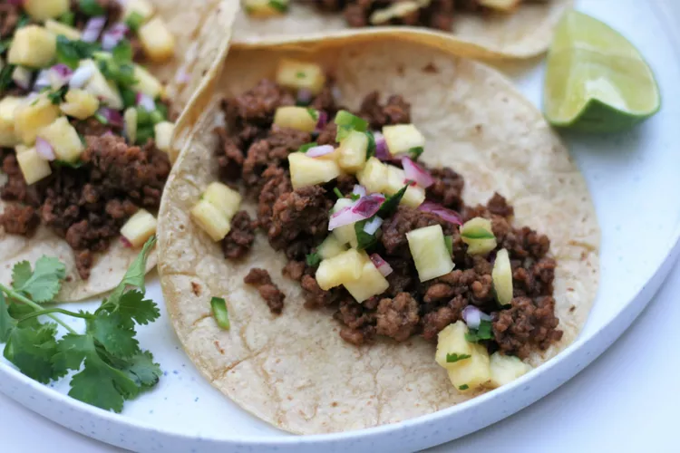

Home
Ground Pork Tacos with Pineapple Salsa

Pork Tacos
Try something different in your tacos and use ground pork instead of beef!
The flavor is somewhat reminiscent of al pastor tacos, but ready in a fraction of the time
Ingredients
- 1 pound ground pork
- 1 tablespoon soy-based liquid seasoning (such as Maggi® Jugo)
- ½ teaspoon chipotle powder
- 1 clove garlic, minced
Steps
- Combine ground pork, liquid seasoning, ground chipotle powder, and garlic in a bowl. Set aside for flavors to meld.
- Combine pineapple, red onion, jalapeno, cilantro, lime juice, and salt in a bowl. Set pineapple salsa aside
- Gather all ingredients.
- Heat a large skillet over medium-high heat. Add ground pork mixture and cook, breaking up meat with a spoon, until pork is cooked through, about 5 minutes.